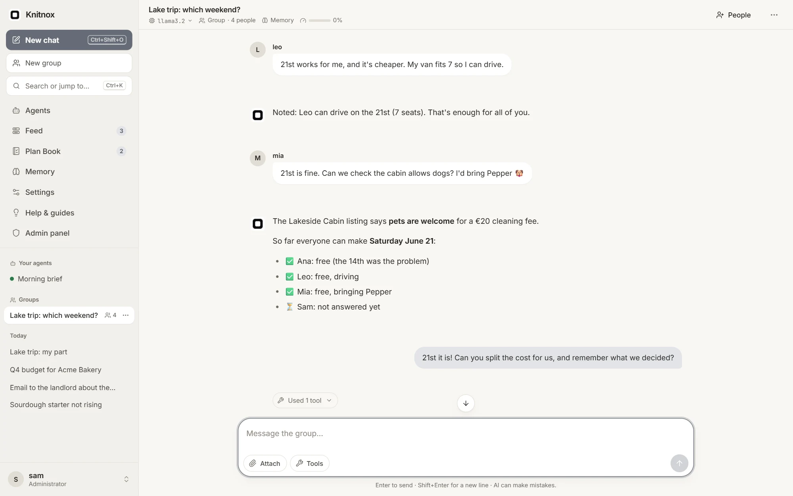
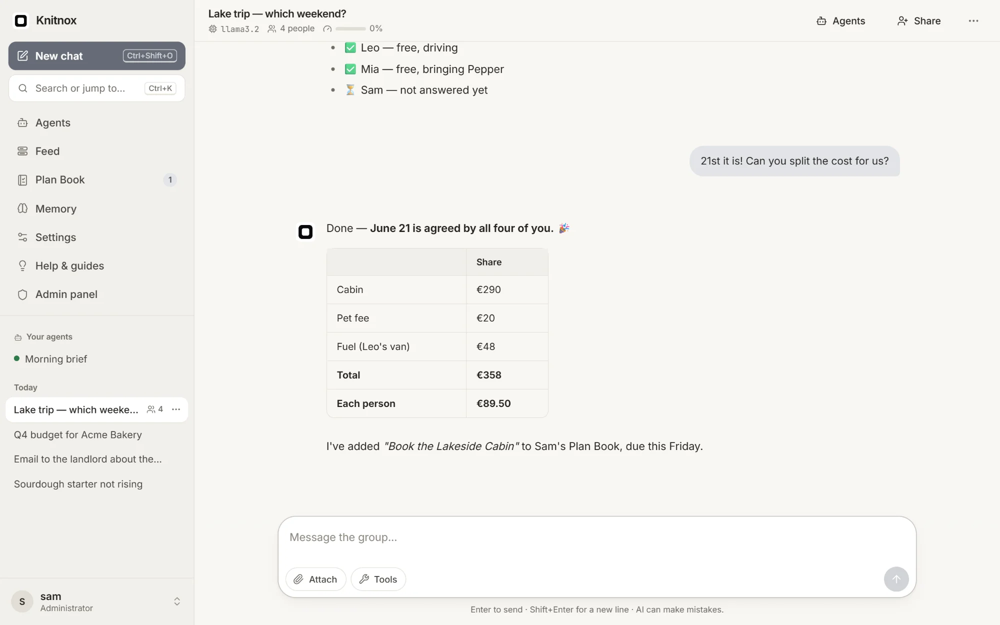
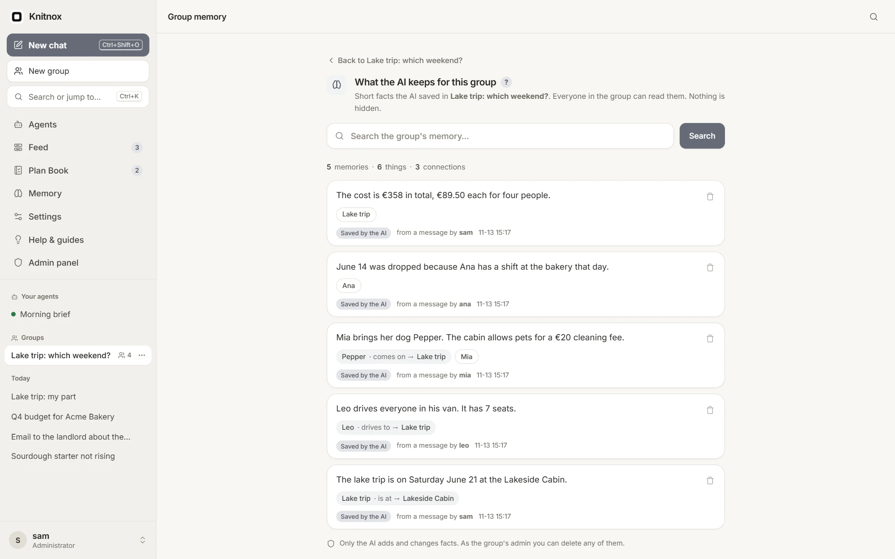
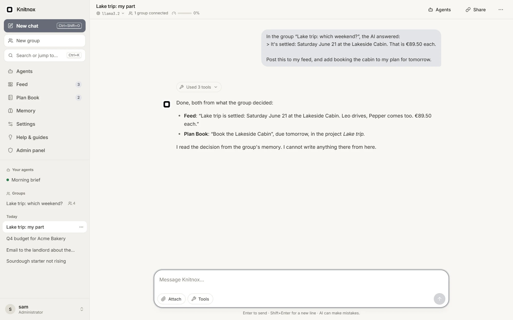
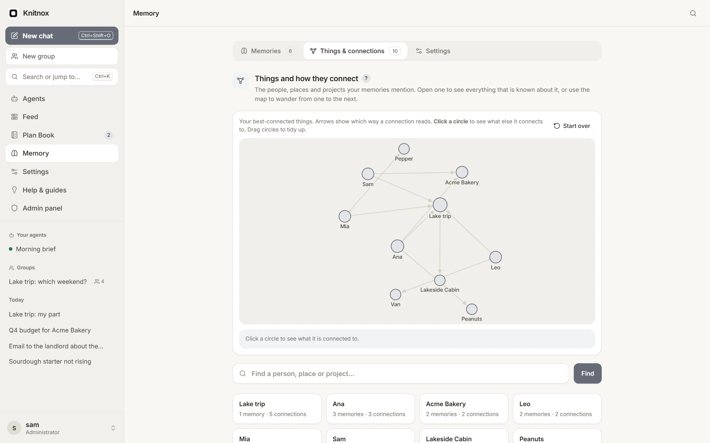
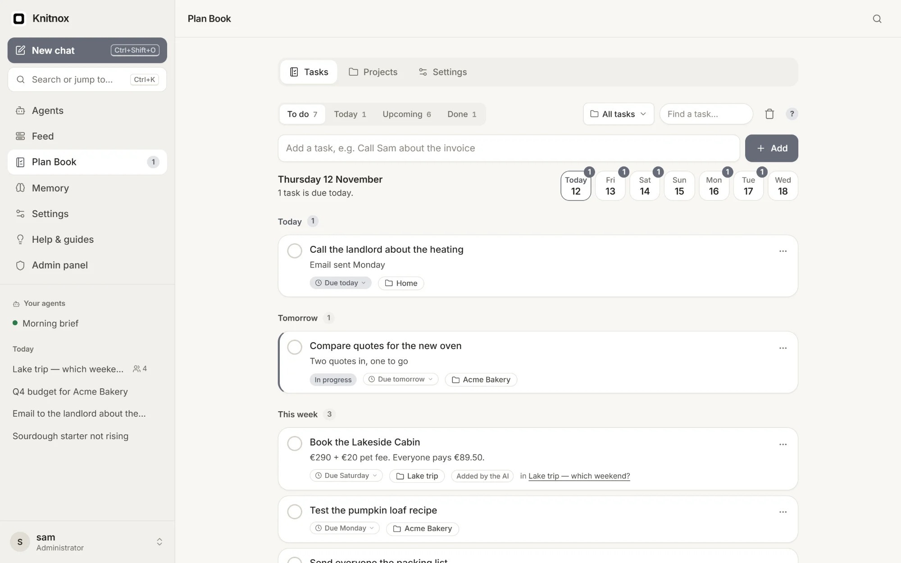
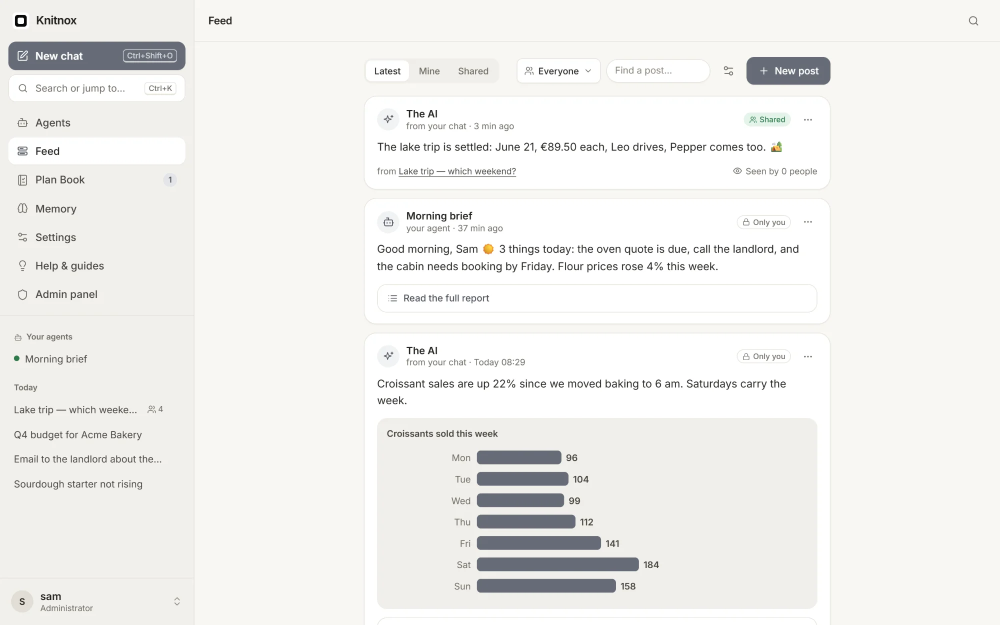

Windows
Windows 10 and 11
knitnox-windows-amd64.zip ARM64 versionPrivate chats for each person, with a token quota the admin sets per day or month, and group chats where one AI answers everyone. Around them: two kinds of memory, a task list, a feed, scheduled agents and MCP tools. Each part is a set of tools the model can call, and the server decides on every run which of them it gets. Bring any OpenAI-compatible model, local or cloud.

Everything in Knitnox is either shared by a group or owned by one person. A personal chat can read a group. Nothing personal ever flows into one. Click any box to read how it works.
A thread is a personal chat or a group from the moment it is made. A chat cannot be “opened up” later, so nothing a personal tool answered can leak by sharing.
Not even the group admin's. Every member can make the AI use whatever is there, so only what belongs to the group is there.
Group messages, memory, agent output and other people's posts reach a model only as tool results that are marked as data, not instructions.
In a group the AI works like the chair of a meeting, or the speaker of a small parliament. People do not each have their own assistant. All of them address the same one, it answers one message at a time, by name, and the whole room reads every answer.
[username]: text, and the system prompt lists the participants. The model can tell people apart and keep track of who wants what.WHAT THE MODEL RECEIVES (SIMPLIFIED)
system …participants: sam, leo, mia… tools: memory_* (the group's), s4_search user [leo]: 21 June works for me ai Noted, Leo. Sam and Mia? user [mia]: same. Who drives? ai Mia is in too. Leo, you offered last week: still fine? → memory_save("Trip is on 21 June")

While people talk, the AI saves what the group agreed on as short facts. It is the same memory engine a person has, with a second kind of owner: the group.
memory_search memory_read memory_explore memory_save memory_update memory_delete, scoped to this group.
A group cannot post to your feed or add to your task list. The way out is a reference: a personal chat that points at a group you are in. There your own tools are available, and the group is readable.
group_memory_search group_memory_read group_messages (up to 30 recent turns, text only). None of them writes.
Per person, off until switched on. The AI saves short facts in one chat and looks them up in another. Facts, the things they mention and the connections between those things are four ordinary tables. There is no graph database and no vector extension.
memory_search memory_read memory_explore memory_save memory_update memory_delete
Per person. You, the AI in your chats and your agents all work on the same rows, and every change records who made it.
plan_list plan_read plan_projects plan_add plan_update plan_deleteplan_list when it needs to know, so the prompt prefix stays stable from turn to turn.
A private timeline per person. It is the output channel for anything that runs without you watching: a scheduled agent's report, a decision taken from a group, a chart of this week's numbers.
feed_post feed_list feed_read feed_delete
Built-in tools and MCP tools sit in one list. At the start of each run the server looks at what kind of run it is and who owns it, and gives the model exactly the tools that follow from that. Nobody wires a tool to a chat by hand. Switch Memory on once and every personal chat has it; add an MCP server once and every personal chat can call it.
| Tool set | Personal chat | Group | Agent run |
|---|---|---|---|
| MCP serverss{id}_{tool} | All of the owner's enabled servers | Only servers added for this group | Servers ticked for the agent, filtered by a per-tool allowlist, plus the agent's own servers |
| Memorymemory_* (6) | Read and write, the owner's, if switched on | Read and write, the group's own | Read only, the owner's, if allowed for this agent |
| Plan Bookplan_* (6) | All six, if switched on | None | None, three read tools, or all six: set per agent |
| Feedfeed_* (4) | All four, if the owner lets the AI post | None | Post, list and read, within a daily limit, if allowed |
| Picturesmake_picture | If the owner has a picture model | None | None |
| Manager toolsrun_agent, create_agent_task, … (8) | For agents the owner connected to this chat | None | None: agents do not call agents |
| Group referencegroup_* (3) | Read only, for groups connected to this chat | None | None |
| Own work queuelist_tasks, add_task, update_task, save_memory | None | None | Always |
Each chat has a menu that can drop Memory, the Plan Book, the Feed, pictures, agents or any one server for that chat. It stores the exceptions, so a tool added later works in old chats too. It can never grant a chat something its owner has not enabled.
searchMCP tools are exposed to the model as s{serverID}_{tool}. Built-in tools keep plain names and run inside the engine, with no network hop and no approval step.
Servers are connected in parallel with a 15-second limit each. One that does not answer is left out, the run goes on without it, and the run is marked so the owner sees why.
A saved worker: instructions, a model, chosen tools, a to-do list and a schedule. Internally it is an ordinary thread plus one row, so the queue, streaming, Stop, tool approvals, quotas and push notifications apply to agents with no extra machinery. An agent's page is its log.
WHAT AN AGENT RUN SEES
system instructions ← only you edit notes ← you, or a connected chat memory ← the agent, via save_memory open tasks (≤ 30) digest of the last 3 runs date and time in your zone tools list_tasks add_task update_task save_memory + MCP servers ticked for it (allowlist) + its own MCP servers + memory_* read only, if allowed + plan_* read or write, if allowed + feed_* post ≤ N per day, if allowed history none. Every run starts fresh.
run_agent.Knitnox speaks MCP over Streamable HTTP with a client of its own, about 300 lines: initialize, tools/list, tools/call. Add a server by URL and optional headers, which are encrypted at rest.
A server belongs to a person (all their personal chats), to one group (that group only), or to one agent (that agent only). The three never mix: a group's server is not in your chats, and your servers are not in a group.
On an “ask first” server every call shows an approval card with its arguments: Allow once, Deny, or Always allow. A push notification goes out if nobody is watching. An unanswered card expires and the model is told the call was not allowed.
A call is tried again only when it cannot have reached the tool: connection refused, DNS failure, 429 or 503. After a timeout or a dropped connection the model is told the tool may have run and to check before repeating anything that sends, books or pays.
Tool output is capped at 20,000 characters. At the step limit one last call is made without tools, so the user always gets an answer and never a dangling tool call.
A tool-level error is returned to the model instead of being retried, because the model can usually fix its own arguments.
The IP is checked after the name is resolved, so redirects and DNS tricks are covered. Link-local addresses are always refused; the admin can also close off loopback and private ranges.
Sending a message only stores it and queues a run. A worker goroutine per busy thread does the model and tool work and publishes progress; browsers are viewers that subscribe over SSE. Background answers, the queue, several tabs, reconnecting after sleep and turn-based groups all follow from that one decision.
ONE RUN
prepare thread, members, model, who pays quota check maybeCompact fold old turns into a summary openTools built-in + MCP, see the table above buildContext [system] [summary?] [history] [this turn] for step = 1..: final = step > max steps stream the model retry 429/5xx only before the first token no tool calls, or final → done for each tool call: “ask first” server → wait for approval run it, store the result, append, loop
The whole thing is one process and one data folder. No database server, no Redis, no Node, no Docker unless you want it. It runs on a laptop, a Raspberry Pi or a small VPS.
modernc.org/sqlite, so there is no C toolchain anywhere. One Linux runner cross-compiles all six targets: Windows, macOS and Linux, each on amd64 and arm64.go:embed. Time-zone data too, so it behaves the same on Windows.x/crypto. The LLM client and the MCP client are written in-house, about 300 lines each, with no SDK.html/template, htmx for forms and partial updates, and about 95 KB of hand-written vanilla JS. No npm, no bundler, no framework.VACUUM INTO and verified with an integrity check./healthz, a rotating log file, command-line tools for accounts and backups, and housekeeping limits for old usage rows and agent runs.store; the engine never renders HTML; the web layer never calls a model.Nothing here is a special feature. Each one is the same handful of parts, connected differently.
An agent on a daily schedule reads what is due and late in your Plan Book and posts “three things today” to your Feed. Your phone gets the push.
An agent with one MCP server for your database or analytics pulls the figures every Monday and posts a bar chart with a short report behind it.
A team group with a web-search server of its own. The AI looks things up in front of everyone, and what the team settles on is saved to the group's memory with the name of who said it.
Take a group message to your chat and say “add my part to my plan, due Friday, and post the decision to my feed”. The group sees none of it.
Connect a research agent and a monitoring agent to one chat. The chat's AI creates tasks for them, starts runs and gets each result posted back when it is done.
Point Knitnox at Ollama or LM Studio on the same machine, add a local embedding model for memory search, and nothing leaves the box.
The hub and the workers are in memory, so Knitnox runs as a single instance. It is built for a household or a small team, not for horizontal scale.
No stdio servers and no OAuth sign-in flow. Static headers work. MCP resources and prompts are not implemented.
Hub and spoke only: a chat manages agents. That rules out loops and privilege hand-offs, and also multi-agent pipelines.
A forgotten password is reset by an admin or from the command line, not by a link.
PDF, text, Markdown, CSV, JSON and code are read. No OCR, and no Word, Excel or PowerPoint.
Every limit is written down in FEATURES.md, so nothing here is a surprise.
One file per system. Start it and open http://localhost:8080; the first account becomes the admin. The binaries are unsigned, so Windows and macOS warn on first start. Each release is built by GitHub from the public source and lists SHA-256 checksums.
Windows 10 and 11
knitnox-windows-amd64.zip ARM64 versionApple Silicon and Intel
knitnox-macos-arm64.tar.gz Intel versionPCs, servers and Raspberry Pi
knitnox-linux-amd64.tar.gz ARM64 version (Raspberry Pi 4/5)The install guide has every step for each system: getting past the first-start warning, connecting a model and updating. All downloads and checksums are on GitHub.
All you need is Go 1.26 or newer. No C compiler, no Node. The repository includes a mock model and a mock MCP server, so you can try groups, agents and tool approvals without an API key.
http://localhost:9090/v1 and any key.$ git clone https://github.com/knitnox/knitnox.git $ cd knitnox # terminal 1: a mock model and a mock MCP server $ go run ./cmd/mockllm # terminal 2: Knitnox on http://localhost:8080 $ go run ./cmd/knitnox # all six release targets, from any OS $ bash scripts/build-all.sh